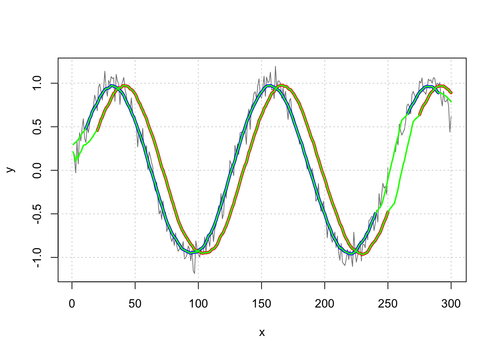

第 6 章 数据操作
6.1 排序
6.1.1 问题
你想将一个向量，矩阵或列表排序。
6.1.2 方案
6.1.2.1 向量
# 生成一个随机向量
v <- sample(101:110)
# 排序
sort(v)
#> [1] 101 102 103 104 105 106 107 108 109 110
# 反向排序
sort(v, decreasing = TRUE)
#> [1] 110 109 108 107 106 105 104 103 102 1016.1.2.2 列表
对列表的一个或多个列进行排序，可以使用 plyr 包里的 arrange() 函数或者使用 R 的内置函数。arrange() 函数更容易使用，但需要额外安装包。
# 生成一个列表
df <- data.frame(id = 1:4, weight = c(20, 27, 24, 22), size = c("small",
"large", "medium", "large"))
df
#> id weight size
#> 1 1 20 small
#> 2 2 27 large
#> 3 3 24 medium
#> 4 4 22 large
library(plyr)
# 按照 'weight' 列排序，以下结果相同。
arrange(df, weight) # 使用 plyr 包里的 arrange 函数
#> id weight size
#> 1 1 20 small
#> 2 4 22 large
#> 3 3 24 medium
#> 4 2 27 large
df[order(df$weight), ] # 使用 R 内置函数
#> id weight size
#> 1 1 20 small
#> 4 4 22 large
#> 3 3 24 medium
#> 2 2 27 large
# 以 size 为第一关键词, weight 为第二关键词排序
arrange(df, size, weight) # 使用 plyr 包里的 arrange 函数
#> id weight size
#> 1 4 22 large
#> 2 2 27 large
#> 3 3 24 medium
#> 4 1 20 small
df[order(df$size, df$weight), ] # 使用 R 内置函数
#> id weight size
#> 4 4 22 large
#> 2 2 27 large
#> 3 3 24 medium
#> 1 1 20 small
# 所有列从左到右依次排序
df[do.call(order, as.list(df)), ]
#> id weight size
#> 1 1 20 small
#> 2 2 27 large
#> 3 3 24 medium
#> 4 4 22 large
# 在这个特殊的例子中，顺序将保持不变请注意，size 列是一个因子且按照因子水平进行排序。在这种情况下将自动按字母顺序排列（创建数据表格），所以大是第一而小是最后。
6.1.2.2.1 反向排序
设定 decreasing=TRUE 可以获取反向排序结果。
反向排序某一列的方法依赖于数据类型：
- 数字：变量名前加一个
-。例如：df[order(-df$weight)] - 因子：转换为整数，变量名前加一个
-。例如：df[order(-xtfrm(df$size)), ] - 字符：没有简单的方法能做到这一点。一种方法是先转换为一个因子，然后如上所述。
# 反向排序 weight 列，下面方法有相同结果：
arrange(df, -weight) # 使用 plyr 包里的 arrange 函数
#> id weight size
#> 1 2 27 large
#> 2 3 24 medium
#> 3 4 22 large
#> 4 1 20 small
df[order(df$weight, decreasing = TRUE), ] # 使用 R 内置函数
#> id weight size
#> 2 2 27 large
#> 3 3 24 medium
#> 4 4 22 large
#> 1 1 20 small
df[order(-df$weight), ] # 使用 R 内置函数
#> id weight size
#> 2 2 27 large
#> 3 3 24 medium
#> 4 4 22 large
#> 1 1 20 small
# 升序排列 size ,然后降序排列 weight
arrange(df, size, -weight) # 使用 plyr 包里的 arrange 函数
#> id weight size
#> 1 2 27 large
#> 2 4 22 large
#> 3 3 24 medium
#> 4 1 20 small
df[order(df$size, -df$weight), ] # 使用 R 内置函数
#> id weight size
#> 2 2 27 large
#> 4 4 22 large
#> 3 3 24 medium
#> 1 1 20 small
# 升序排列 size,然后降序排列 weight 因子需要 xtfrm()
arrange(df, -xtfrm(size), weight) # 使用 plyr 包里的 arrange 函数
#> id weight size
#> 1 1 20 small
#> 2 3 24 medium
#> 3 4 22 large
#> 4 2 27 large
df[order(-xtfrm(df$size), df$weight), ] # 使用 R 内置函数
#> id weight size
#> 1 1 20 small
#> 3 3 24 medium
#> 4 4 22 large
#> 2 2 27 large6.2 随机排序
6.2.1 问题
你想使一个数据结构随机排序。
6.2.2 方案
# 创建一个向量
v <- 11:20
# 随机化向量的顺序
v <- sample(v)
# 创建一个列表
data <- data.frame(label = letters[1:5], number = 11:15)
data
#> label number
#> 1 a 11
#> 2 b 12
#> 3 c 13
#> 4 d 14
#> 5 e 15
# 随机化列表的顺序
data <- data[sample(1:nrow(data)), ]
data
#> label number
#> 5 e 15
#> 4 d 14
#> 3 c 13
#> 2 b 12
#> 1 a 116.2.2.1 注意
为了使随机化可重复，你应该设置随机数生成器。详见：生成随机数、生成可重复的随机数序列。
6.3 转换向量类型
6.3.1 问题
你想在数值向量、字符串向量和因子向量间做转换。
6.3.2 方案
假设你刚开始有一个数值型向量 n:
n <- 10:14
n
#> [1] 10 11 12 13 14将这个数值型向量转换为其他两种类型（将结果保存在 c 和 f ）：
# 数值型转换字符串
c <- as.character(n)
c
#> [1] "10" "11" "12" "13" "14"
# 数值型转换因子型
f <- factor(n)
f
#> [1] 10 11 12 13 14
#> Levels: 10 11 12 13 14将字符串向量转化为另外两种：
# 数值
as.numeric(c)
#> [1] 10 11 12 13 14
# 字符串转换为因子
factor(c)
#> [1] 10 11 12 13 14
#> Levels: 10 11 12 13 14把一个因子转变为一个字符串型向量很简单：
# 因子转换为字符串
as.character(f)
#> [1] "10" "11" "12" "13" "14"然而，将因子转化为数值型向量有点棘手。如果你使用as.numberic，它将会给你因子编码的数值，恐怕不是你想要的。
as.numeric(f)
#> [1] 1 2 3 4 5
# 另一种方式得到数字的编码，如果这是你想要的:
unclass(f)
#> [1] 1 2 3 4 5
#> attr(,"levels")
#> [1] "10" "11" "12" "13" "14"将因子转换为数值型的方法是先转化为字符串型，再转化为数值型。
# 因子转换为数值型
as.numeric(as.character(f))
#> [1] 10 11 12 13 146.4 查找并移除重复记录
6.4.1 问题
你想查找和（或）移除向量或列表里重复的条目。
6.4.2 方案
6.4.2.1 向量
# 生成一个向量
set.seed(158)
x <- round(rnorm(20, 10, 5))
x
#> [1] 14 11 8 4 12 5 10 10 3 3 11 6 0 16 8 10 8
#> [18] 5 6 6
# 对于每一个元素：它是否重复（第一个值不算）
duplicated(x)
#> [1] FALSE FALSE FALSE FALSE FALSE FALSE FALSE TRUE
#> [9] FALSE TRUE TRUE FALSE FALSE FALSE TRUE TRUE
#> [17] TRUE TRUE TRUE TRUE
# 重复条目的值 注意“6”出现了三次，所以它有两个
x[duplicated(x)]
#> [1] 10 3 11 8 10 8 5 6 6
# 重复的条目无需重复出现
unique(x[duplicated(x)])
#> [1] 10 3 11 8 5 6
# 移除重复数据，下面两种方法效果一样:
unique(x)
#> [1] 14 11 8 4 12 5 10 3 6 0 16
x[!duplicated(x)]
#> [1] 14 11 8 4 12 5 10 3 6 0 166.4.2.2 列表
# 一个样本列表:
df <- read.table(header = TRUE, text = "
label value
A 4
B 3
C 6
B 3
B 1
A 2
A 4
A 4
")
# 每一行是否有重复？
duplicated(df)
#> [1] FALSE FALSE FALSE TRUE FALSE FALSE TRUE TRUE
# 显示重复的条目
df[duplicated(df), ]
#> label value
#> 4 B 3
#> 7 A 4
#> 8 A 4
# 显示没有重复的条目 (行名可能不同，但值相同)
unique(df[duplicated(df), ])
#> label value
#> 4 B 3
#> 7 A 4
# 移除重复的数据，下面两种方法效果一样:
unique(df)
#> label value
#> 1 A 4
#> 2 B 3
#> 3 C 6
#> 5 B 1
#> 6 A 2
df[!duplicated(df), ]
#> label value
#> 1 A 4
#> 2 B 3
#> 3 C 6
#> 5 B 1
#> 6 A 26.5 NA 存在时进行向量或因子比较
6.5.1 问题
你想在 NA 存在的情况下比较比较两个向量或因子并返回 TRUE 或 FALSE（而不是 NA）。
6.5.2 方案
假设你有一个两列（包含布尔值）的列表：
df <- data.frame(a = c(TRUE, TRUE, TRUE, FALSE, FALSE, FALSE,
NA, NA, NA), b = c(TRUE, FALSE, NA, TRUE, FALSE, NA,
TRUE, FALSE, NA))
df
#> a b
#> 1 TRUE TRUE
#> 2 TRUE FALSE
#> 3 TRUE NA
#> 4 FALSE TRUE
#> 5 FALSE FALSE
#> 6 FALSE NA
#> 7 NA TRUE
#> 8 NA FALSE
#> 9 NA NA通常情况下，当你比较两个包含NA值的向量或因子时，原始值是NA，结果也将有NA。根据你的目的，这或许是是你想要的结果。
df$a == df$b
#> [1] TRUE FALSE NA FALSE TRUE NA NA NA
#> [9] NA
# 同样的比较，但是可以生成列表的另一列：
data.frame(df, isSame = (df$a == df$b))
#> a b isSame
#> 1 TRUE TRUE TRUE
#> 2 TRUE FALSE FALSE
#> 3 TRUE NA NA
#> 4 FALSE TRUE FALSE
#> 5 FALSE FALSE TRUE
#> 6 FALSE NA NA
#> 7 NA TRUE NA
#> 8 NA FALSE NA
#> 9 NA NA NA6.5.2.1 可以与 NA 相比的函数
这个比较函数会把NA赋予另一个值。如果一个向量的两项都是 NA ，则返回 TRUE；如果其中一个是 NA，则返回 FALSE；所有其他比较(无NA之间)的方式是一样的。
# 这个函数将会返回 TRUE，当两个元素相同（包括两个
# NA），其他情况返回 FALSE
compareNA <- function(v1, v2) {
same <- (v1 == v2) | (is.na(v1) & is.na(v2))
same[is.na(same)] <- FALSE
return(same)
}6.5.2.2 使用该函数的例子
比较两个布尔向量：
compareNA(df$a, df$b)
#> [1] TRUE FALSE FALSE FALSE TRUE FALSE FALSE FALSE
#> [9] TRUE
# 同样的比较，生成另一列
data.frame(df, isSame = compareNA(df$a, df$b))
#> a b isSame
#> 1 TRUE TRUE TRUE
#> 2 TRUE FALSE FALSE
#> 3 TRUE NA FALSE
#> 4 FALSE TRUE FALSE
#> 5 FALSE FALSE TRUE
#> 6 FALSE NA FALSE
#> 7 NA TRUE FALSE
#> 8 NA FALSE FALSE
#> 9 NA NA TRUE它也能用于因子，即使因子的水平处于不同的次序：
# 创建一个含因子的列表
df1 <- data.frame(a = factor(c("x", "x", "x", "y", "y",
"y", NA, NA, NA)), b = factor(c("x", "y", NA, "x", "y",
NA, "x", "y", NA)))
# 比较
data.frame(df1, isSame = compareNA(df1$a, df1$b))
#> a b isSame
#> 1 x x TRUE
#> 2 x y FALSE
#> 3 x <NA> FALSE
#> 4 y x FALSE
#> 5 y y TRUE
#> 6 y <NA> FALSE
#> 7 <NA> x FALSE
#> 8 <NA> y FALSE
#> 9 <NA> <NA> TRUE
# 也能用于因子，即使因子的水平处于不同的次序
df1$b <- factor(df1$b, levels = c("y", "x"))
data.frame(df1, isSame = compareNA(df1$a, df1$b))
#> a b isSame
#> 1 x x TRUE
#> 2 x y FALSE
#> 3 x <NA> FALSE
#> 4 y x FALSE
#> 5 y y TRUE
#> 6 y <NA> FALSE
#> 7 <NA> x FALSE
#> 8 <NA> y FALSE
#> 9 <NA> <NA> TRUE6.6 数据重新编码
6.6.1 问题
你想重新编码数据或从现有的数据中计算生产新的数据列。
6.6.2 方案
下面的例子将使用这些数据：
data <- read.table(header = T, text = "
subject sex control cond1 cond2
1 M 7.9 12.3 10.7
2 F 6.3 10.6 11.1
3 F 9.5 13.1 13.8
4 M 11.5 13.4 12.9
")6.6.2.1 重新编码分类变量
最简单的方法是使用 plyr 包里的 revalue() 或 mapvalues()。这可以令M 为 1、F 为 2，并把它放在一个新生产的列。注意，这两个函数均保存数据类型：如果输入一个因子，输出将会是一个因子；如果输入是一个字符串向量，输出将会是一个字符串向量。
library(plyr)
# 下面两行是等价的:
data$scode <- revalue(data$sex, c(M = "1", F = "2"))
data$scode <- mapvalues(data$sex, from = c("M", "F"), to = c("1",
"2"))
data
#> subject sex control cond1 cond2 scode
#> 1 1 M 7.9 12.3 10.7 1
#> 2 2 F 6.3 10.6 11.1 2
#> 3 3 F 9.5 13.1 13.8 2
#> 4 4 M 11.5 13.4 12.9 1
# data$sex是一个因子，因此data$scode也是因子详见映射向量的值。
如果你不想依赖 plyr包，你可以使用 R 内置函数：
data$scode[data$sex == "M"] <- "1"
data$scode[data$sex == "F"] <- "2"
# 把列转换为因子
data$scode <- factor(data$scode)
data
#> subject sex control cond1 cond2 scode
#> 1 1 M 7.9 12.3 10.7 1
#> 2 2 F 6.3 10.6 11.1 2
#> 3 3 F 9.5 13.1 13.8 2
#> 4 4 M 11.5 13.4 12.9 1另一种方法是使用 match() 函数：
oldvalues <- c("M", "F")
newvalues <- factor(c("g1", "g2")) # 转换为因子
data$scode <- newvalues[match(data$sex, oldvalues)]
data
#> subject sex control cond1 cond2 scode
#> 1 1 M 7.9 12.3 10.7 g1
#> 2 2 F 6.3 10.6 11.1 g2
#> 3 3 F 9.5 13.1 13.8 g2
#> 4 4 M 11.5 13.4 12.9 g16.6.2.2 将一个连续变量重编码为分类变量
标记 control 值小于 7 为 low，大于或等于 7 为 high：
data$category[data$control < 7] <- "low"
data$category[data$control >= 7] <- "high"
# 把列转换为因子
data$category <- factor(data$category)
data
#> subject sex control cond1 cond2 scode category
#> 1 1 M 7.9 12.3 10.7 g1 high
#> 2 2 F 6.3 10.6 11.1 g2 low
#> 3 3 F 9.5 13.1 13.8 g2 high
#> 4 4 M 11.5 13.4 12.9 g1 high用 cut() 函数，可以指定边限和新值：
data$category <- cut(data$control, breaks = c(-Inf, 7, 9,
Inf), labels = c("low", "medium", "high"))
data
#> subject sex control cond1 cond2 scode category
#> 1 1 M 7.9 12.3 10.7 g1 medium
#> 2 2 F 6.3 10.6 11.1 g2 low
#> 3 3 F 9.5 13.1 13.8 g2 high
#> 4 4 M 11.5 13.4 12.9 g1 high默认情况下，范围是左边开放、右边关闭，如 (7，9] 。使用 right= FALSE 可以设置成左边关闭、右边开放，像 [7、9)。
6.6.2.3 计算得到一个新的连续变量
假设您想添加一个新列，为三个量的和。
data$total <- data$control + data$cond1 + data$cond2
data
#> subject sex control cond1 cond2 scode category total
#> 1 1 M 7.9 12.3 10.7 g1 medium 30.9
#> 2 2 F 6.3 10.6 11.1 g2 low 28.0
#> 3 3 F 9.5 13.1 13.8 g2 high 36.4
#> 4 4 M 11.5 13.4 12.9 g1 high 37.86.7 映射向量值
6.7.1 问题
你想将向量中所有值为 x 的实例改为值 y。
6.7.2 方案
# 创建一些样本数据
str <- c("alpha", "beta", "gamma")
num <- c(1, 2, 3)最简单的方法是使用 plyr 包里的 revalue() 或 mapvalues()。
library(plyr)
revalue(str, c(beta = "two", gamma = "three"))
#> [1] "alpha" "two" "three"
mapvalues(str, from = c("beta", "gamma"), to = c("two",
"three"))
#> [1] "alpha" "two" "three"
# 对于数值型向量，revalue()
# 没作用，由于它使用一个命名了的向量，向量名一般是字符串而不是数值，但
# mapvalues()仍然有作用
mapvalues(num, from = c(2, 3), to = c(5, 6))
#> [1] 1 5 6如果你不想依赖 plyr包，你可以使用 R 内置函数。注意，这些方法将直接修改向量；也就是说，你不需要把结果保存回变量。
# 把'beta' 替换为 'two'
str[str == "beta"] <- "two"
str
#> [1] "alpha" "two" "gamma"
num[num == 2] <- 5
num
#> [1] 1 5 3也可以使用R的字符串查找和替换函数来重新映射字符串向量的值。注意，alpha 前后的 ^ 和 $ 确保整个字符串匹配。没有它们，如果有一个值为alphabet，它也会被匹配，替代 onebet。
str <- c("alpha", "beta", "gamma")
sub("^alpha$", "one", str)
#> [1] "one" "beta" "gamma"
# 把所有列的 'a' 替代为 'X'
gsub("a", "X", str)
#> [1] "XlphX" "betX" "gXmmX"
# gsub() 替代所有匹配的元素 sub()
# 只替代每一个元素首先匹配到的内容6.8 重命名因子水平
6.8.1 问题
你想要重命名因子水平。
6.8.2 方案
# 处理一个因子的样例
x <- factor(c("alpha", "beta", "gamma", "alpha", "beta"))
x
#> [1] alpha beta gamma alpha beta
#> Levels: alpha beta gamma
levels(x)
#> [1] "alpha" "beta" "gamma"最简单的办法是使用 plyr 包中的 revalue()或者 mapvalues() 函数。
library(plyr)
revalue(x, c(beta = "two", gamma = "three"))
#> [1] alpha two three alpha two
#> Levels: alpha two three
mapvalues(x, from = c("beta", "gamma"), to = c("two", "three"))
#> [1] alpha two three alpha two
#> Levels: alpha two three如果你不想要依赖 plyr 包，你可以使用 R 的内置函数进行以下处理。注意这些方法会直接修改变量x；你不需要将结果重新赋值回给x。
# 通过名字重命名: change 'beta' to 'two'
levels(x)[levels(x) == "beta"] <- "two"
# 你也可以通过位置重命名，但这种做法比较危险（会因数据变化造成不可控结果），不值得推荐
# 通过因子列表索引重命名: change third item, 'gamma', to
# 'three'.
levels(x)[3] <- "three"
x
#> [1] alpha two three alpha two
#> Levels: alpha two three
# 重命名所有的因子水平
levels(x) <- c("one", "two", "three")
x
#> [1] one two three one two
#> Levels: one two three我们可以不使用 plyr 包而通过名字实现因子水平的重命名，但记住这只有在所有的水平都在列表中时才起作用，否则会返回 NA 以代替寻找不到的因子水平。
# 用名字重命名所有因子
x <- factor(c("alpha", "beta", "gamma", "alpha", "beta"))
levels(x) <- list(A = "alpha", B = "beta", C = "gamma")
x
#> [1] A B C A B
#> Levels: A B C我们也可以使用 R 的字符串搜索与替换函数去重命名因子水平。注意字符 alpha 周围的 ^ 与 $ 符号是用来确保整个字符串能够匹配（正则表达式）。如果没有它们，字符 alphabet 也能够被成功匹配并会被替换为 onbet。
# 一个样例
x <- factor(c("alpha", "beta", "gamma", "alpha", "beta"))
x
#> [1] alpha beta gamma alpha beta
#> Levels: alpha beta gamma
levels(x) <- sub("^alpha$", "one", levels(x))
x
#> [1] one beta gamma one beta
#> Levels: one beta gamma
# 将所有的 'a' 替换为 'X'
levels(x) <- gsub("a", "X", levels(x))
x
#> [1] one betX gXmmX one betX
#> Levels: one betX gXmmX
# gsub() 替代所有匹配的元素 sub()
# 只替代每一个元素首先匹配到的内容6.8.3 更多参考
匹配向量中值并将其替换为新的值操作类似，参见映射向量值获取更多信息。
6.9 重计算因子水平
6.9.1 问题
你想要重新计算一个因子的水平。这在因子水平实际并没有出现在数据中时非常有用。它可能发生在数据的导入或者当你移除一些行时。
6.9.2 方案
对于单个因子变量：
# 创建额外的因子水平 (gamma)
x <- factor(c("alpha", "beta", "alpha"), levels = c("alpha",
"beta", "gamma"))
x
#> [1] alpha beta alpha
#> Levels: alpha beta gamma
# 移除额外的因子水平
x <- factor(x)
x
#> [1] alpha beta alpha
#> Levels: alpha beta当导入数据之后，你可能有一个混合因子变量和其他向量的数据框，然后想要重新计算所有因子的水平。你可以使用 droplevels() 函数实现这一点。
# 创建一些因子的数据框 (有额外的因子水平)
df <- data.frame(x = factor(c("alpha", "beta", "alpha"),
levels = c("alpha", "beta", "gamma")), y = c(5, 8, 2),
z = factor(c("red", "green", "green"), levels = c("red",
"green", "blue")))
# 显示因子水平 (with extra levels)
df$x
#> [1] alpha beta alpha
#> Levels: alpha beta gamma
df$z
#> [1] red green green
#> Levels: red green blue
# 丢掉额外因子水平
df <- droplevels(df)
# 再次显示因子，现在没有额外的因子水平了
df$x
#> [1] alpha beta alpha
#> Levels: alpha beta
df$z
#> [1] red green green
#> Levels: red green6.9.3 另见
想要重计算一个数据框中所有的因子变量列的因子水平，参见重计算数据框所有因子列的水平。
6.10 改变因子水平次序
6.10.1 问题
你想要改变因子水平出现的次序。
6.10.2 方案
R 中有两种不同类型的因子变量：有序和无序。比如{小，中，大}和｛钢笔，橡皮擦，铅笔｝。对于绝大多数分析而言，一个因子变量是有序还是无序并不重要。如果因子是有序的，那么这个因子水平的特定次序是重要的（小 < 中 < 大）。如果因子是无序的，那么因子水平同样会以一定的顺序出现，但这仅仅为了方便而已（钢笔，橡皮擦，铅笔） - 但有时它是重要的，例如它会指导结果如何输出，图形元素如何展示。
一种改变因子次序的方式是对因子使用 factor() 函数并且直接指定它们的次序。下面这个例子中，ordered() 函数可以替换 factor() 函数。
下面是这个例子的数据：
# 创建一个错误次序的因子
sizes <- factor(c("small", "large", "large", "small", "medium"))
sizes
#> [1] small large large small medium
#> Levels: large medium small因子水平被显式地指定：
sizes <- factor(sizes, levels = c("small", "medium", "large"))
sizes
#> [1] small large large small medium
#> Levels: small medium large我们同样可以对有序因子这样操作：
sizes <- ordered(c("small", "large", "large", "small", "medium"))
sizes <- ordered(sizes, levels = c("small", "medium", "large"))
sizes
#> [1] small large large small medium
#> Levels: small < medium < large另一种方式是使用 relevel() 函数在列表中制作一个特定水平（这对有序因子不起作用）。
# 创建错误次序的因子
sizes <- factor(c("small", "large", "large", "small", "medium"))
sizes
#> [1] small large large small medium
#> Levels: large medium small
# 使得 medium 排最前面
sizes <- relevel(sizes, "medium")
sizes
#> [1] small large large small medium
#> Levels: medium large small
# 使得 small 排最前面
sizes <- relevel(sizes, "small")
sizes
#> [1] small large large small medium
#> Levels: small medium large当因子创建时，我们可以指定合适的顺序。
sizes <- factor(c("small", "large", "large", "small", "medium"),
levels = c("small", "medium", "large"))
sizes
#> [1] small large large small medium
#> Levels: small medium large反转因子水平次序。
# 创建错误次序的因子
sizes <- factor(c("small", "large", "large", "small", "medium"))
sizes
#> [1] small large large small medium
#> Levels: large medium small
sizes <- factor(sizes, levels = rev(levels(sizes)))
sizes
#> [1] small large large small medium
#> Levels: small medium large6.11 重命名数据框的列
6.11.1 问题
你想要给数据框的列重新命名。
6.11.2 方案
让我们从有三列的一个数据框开始：
d <- data.frame(alpha = 1:3, beta = 4:6, gamma = 7:9)
d
#> alpha beta gamma
#> 1 1 4 7
#> 2 2 5 8
#> 3 3 6 9
names(d)
#> [1] "alpha" "beta" "gamma"最简单的方式是使用 plyr 包的 rename() 函数：
library(plyr)
rename(d, c(beta = "two", gamma = "three"))
#> alpha two three
#> 1 1 4 7
#> 2 2 5 8
#> 3 3 6 9如果你不想要依赖 plyr 包，可以使用下面的 R 内置函数。注意这些直接修改了d，意味着你不需要把结果保存回d。
# 通过 name 函数重命名列：把 'beta' 改为 'two'
names(d)[names(d) == "beta"] <- "two"
d
#> alpha two gamma
#> 1 1 4 7
#> 2 2 5 8
#> 3 3 6 9
# 你也可以通过位置索引改变名字，但这种操作会有点危险，一旦你以后对数据做出改变，这些操作可能就不适用了。
# 通过名字向量的位置索引重命名：改变第三项，将 'gamma'
# 改成 'three'
names(d)[3] <- "three"
d
#> alpha two three
#> 1 1 4 7
#> 2 2 5 8
#> 3 3 6 9也可以使用 R 的字符串搜索和替换函数来重命名列。注意alpha周围的^和$是确保全部字符串匹配。没有他们的话，如果存在一个叫 alphabet 的列也会匹配成功。
names(d) <- sub("^alpha$", "one", names(d))
d
#> one two three
#> 1 1 4 7
#> 2 2 5 8
#> 3 3 6 9
# 所有的列中，替换列名中的't'为'X'
names(d) <- gsub("t", "X", names(d))
d
#> one Xwo Xhree
#> 1 1 4 7
#> 2 2 5 8
#> 3 3 6 9
# gsub() 替换每个列名中所有的匹配项 sub()
# 只替换每个列名中匹配的第一项6.12 添加和移除数据框的列
6.12.1 问题
你想要对一个数据框添加或者移除一些列（变量）。
6.12.2 方案
这里有许多解决办法：
data <- read.table(header = TRUE, text = "
id weight
1 20
2 27
3 24
")
# 添加一列的办法
data$size <- c("small", "large", "medium")
data[["size"]] <- c("small", "large", "medium")
data[, "size"] <- c("small", "large", "medium")
data$size <- 0 # 添加的变量所有行都是一样的值# 移除列的办法
data$size <- NULL
data[["size"]] <- NULL
data[,"size"] <- NULL
data[[3]] <- NULL
data[,3] <- NULL
data <- subset(data, select=-size)6.13 对数据框的列重新排序
6.13.1 问题
你想要对一个数据框的列重新排序。
6.13.2 方案
# 一个样例数据框
data <- read.table(header = TRUE, text = "
id weight size
1 20 small
2 27 large
3 24 medium
")
# 根据列名数字排序
data[c(1, 3, 2)]
#> id size weight
#> 1 1 small 20
#> 2 2 large 27
#> 3 3 medium 24
# 如果你想要实际改变 `data`，需要把它重新赋值回 `data`
# 符号： data <- data[c(1,3,2)]
# 根据列名重新排序
data[c("size", "id", "weight")]
#> size id weight
#> 1 small 1 20
#> 2 large 2 27
#> 3 medium 3 24上面例子中对数据框进行索引是将数据框作为一个列表（一个数据框实际上就是向量列表）。你也可以使用矩阵形式的索引方式：
data[, c(1, 3, 2)]
#> id size weight
#> 1 1 small 20
#> 2 2 large 27
#> 3 3 medium 24矩阵形式索引的缺点在于当你只指定一列时结果会不同。下面例子中，返回的结果对象是一个向量而不是数据框。因为返回的数据类型并不能总是与矩阵索引保持一致，所以通常使用列表形式进行索引更为安全，或者在矩阵索引形式中指定 drop=FALSE 选项：
# 列表形式的索引
data[2]
#> weight
#> 1 20
#> 2 27
#> 3 24
# 矩阵形式的索引——降维会变为一个向量
data[, 2]
#> [1] 20 27 24
# 矩阵形式的索引，指定 drop=FALSE
# ——保留维度以保存数据框形式
data[, 2, drop = FALSE]
#> weight
#> 1 20
#> 2 27
#> 3 246.14 合并数据框
6.14.1 问题
你想要基于一个给定的列合并两个数据框（像 SQL 的 join）。
6.14.2 方案
# 创建一个将 storyid 映射到 titles 上的数据框
stories <- read.table(header = TRUE, text = "
storyid title
1 lions
2 tigers
3 bears
")
# 创建另一个有数据和 storyid 的数据框（没有 titles）
data <- read.table(header = TRUE, text = "
subject storyid rating
1 1 6.7
1 2 4.5
1 3 3.7
2 2 3.3
2 3 4.1
2 1 5.2
")
# 合并两个数据框
merge(stories, data, "storyid")
#> storyid title subject rating
#> 1 1 lions 1 6.7
#> 2 1 lions 2 5.2
#> 3 2 tigers 1 4.5
#> 4 2 tigers 2 3.3
#> 5 3 bears 1 3.7
#> 6 3 bears 2 4.1如果两个数据框里你想要匹配的列有不同的名字，可以通过选项指定：
# 下面使用的是 id 替换了 storyid
stories2 <- read.table(header = TRUE, text = "
id title
1 lions
2 tigers
3 bears
")
# 合并两个数据框
merge(x = stories2, y = data, by.x = "id", by.y = "storyid")
#> id title subject rating
#> 1 1 lions 1 6.7
#> 2 1 lions 2 5.2
#> 3 2 tigers 1 4.5
#> 4 2 tigers 2 3.3
#> 5 3 bears 1 3.7
#> 6 3 bears 2 4.1
# 注意结果的列名继承第一个数据框我们也可以合并多个列：
# 制造更多的数据
animals <- read.table(header = T, text = "
size type name
small cat lynx
big cat tiger
small dog chihuahua
big dog \"great dane\"
")
observations <- read.table(header = T, text = "
number size type
1 big cat
2 small dog
3 small dog
4 big dog
")
merge(observations, animals, c("size", "type"))
#> size type number name
#> 1 big cat 1 tiger
#> 2 big dog 4 great dane
#> 3 small dog 2 chihuahua
#> 4 small dog 3 chihuahua6.14.3 注意
合并之后，改变列名的顺序可能是有用的，参见对数据框的列重新排序 。
6.15 比较数据框
6.15.1 问题
你想要比较两个或多个数据框并找到在超过一个数据框中出现的行，或者仅在一个数据框中出现的行。
6.15.2 方案
6.15.2.1 一个例子
假设你有下面三个数据框，你想要知道那些至少在两个数据框中出现的行。
dfA <- data.frame(Subject = c(1, 1, 2, 2), Response = c("X",
"X", "X", "X"))
dfA
#> Subject Response
#> 1 1 X
#> 2 1 X
#> 3 2 X
#> 4 2 X
dfB <- data.frame(Subject = c(1, 2, 3), Response = c("X",
"Y", "X"))
dfB
#> Subject Response
#> 1 1 X
#> 2 2 Y
#> 3 3 X
dfC <- data.frame(Subject = c(1, 2, 3), Response = c("Z",
"Y", "Z"))
dfC
#> Subject Response
#> 1 1 Z
#> 2 2 Y
#> 3 3 Z在 dfA 中，包括 (1,X) 的行同样出现在了 dfB，但是包含 (2,X) 的行没有出现在任何其他的数据框。相似地，dfB 包含的 (1,X) 出现在了 dfA，(2,Y) 出现在了 dfC，但是 (3,X) 没有出现在其他数据框。
你可能想要标记在其他数据框中出现了的行，或者在每个数据框中都是唯一的行。
6.15.2.2 连接数据框
进一步地，我们首先用一个可以识别每一行来自哪里的列来连接数据框。这里称为 Coder 变量因为它可能是由三个不同的人编码的数据。在这个例子中，你可能想要找到编码者相同之处（至少出现在两个数据框中的行），或者它们不同之处。
dfA$Coder <- "A"
dfB$Coder <- "B"
dfC$Coder <- "C"
df <- rbind(dfA, dfB, dfC) # 把它们粘在一起
df <- df[, c("Coder", "Subject", "Response")] # 重新排序
df
#> Coder Subject Response
#> 1 A 1 X
#> 2 A 1 X
#> 3 A 2 X
#> 4 A 2 X
#> 5 B 1 X
#> 6 B 2 Y
#> 7 B 3 X
#> 8 C 1 Z
#> 9 C 2 Y
#> 10 C 3 Z如果你的数据一开始就是这种格式，那就不要将它们连接到一起啦。
6.15.2.3 dupsBetweenGroups() 函数
该函数用来寻找不同组别的重复行：
dupsBetweenGroups <- function(df, idcol) {
# df: the data frame idcol: the column which identifies
# the group each row belongs to
# Get the data columns to use for finding matches
datacols <- setdiff(names(df), idcol)
# Sort by idcol, then datacols. Save order so we can
# undo the sorting later.
sortorder <- do.call(order, df)
df <- df[sortorder, ]
# Find duplicates within each id group (first copy not
# marked)
dupWithin <- duplicated(df)
# With duplicates within each group filtered out, find
# duplicates between groups. Need to scan up and down
# with duplicated() because first copy is not marked.
dupBetween = rep(NA, nrow(df))
dupBetween[!dupWithin] <- duplicated(df[!dupWithin,
datacols])
dupBetween[!dupWithin] <- duplicated(df[!dupWithin,
datacols], fromLast = TRUE) | dupBetween[!dupWithin]
# ============= Replace NA's with previous non-NA value
# ============== This is why we sorted earlier - it was
# necessary to do this part efficiently
# Get indexes of non-NA's
goodIdx <- !is.na(dupBetween)
# These are the non-NA values from x only Add a leading
# NA for later use when we index into this vector
goodVals <- c(NA, dupBetween[goodIdx])
# Fill the indices of the output vector with the indices
# pulled from these offsets of goodVals. Add 1 to avoid
# indexing to zero.
fillIdx <- cumsum(goodIdx) + 1
# The original vector, now with gaps filled
dupBetween <- goodVals[fillIdx]
# Undo the original sort
dupBetween[sortorder] <- dupBetween
# Return the vector of which entries are duplicated
# across groups
return(dupBetween)
}6.15.2.4 寻找重复行
使用在前文定义的函数 dupsBetweenGroups()，我们可以找出在不同组别中重复的行。
# 找出在不同组别中重复的行
dupRows <- dupsBetweenGroups(df, "Coder")
# 在数据框的旁边打印出来
cbind(df, dup = dupRows)
#> Coder Subject Response dup
#> 1 A 1 X TRUE
#> 2 A 1 X TRUE
#> 3 A 2 X FALSE
#> 4 A 2 X FALSE
#> 5 B 1 X TRUE
#> 6 B 2 Y TRUE
#> 7 B 3 X FALSE
#> 8 C 1 Z FALSE
#> 9 C 2 Y TRUE
#> 10 C 3 Z FALSE注意这不会标记在同一组中的重复行，比如 Coder=A 时，有两行 Subject=2 以及 Response=X，但没有标记出来。
6.15.2.5 寻找唯一行
同样可以找出在每一组中唯一出现的行。
cbind(df, unique = !dupRows)
#> Coder Subject Response unique
#> 1 A 1 X FALSE
#> 2 A 1 X FALSE
#> 3 A 2 X TRUE
#> 4 A 2 X TRUE
#> 5 B 1 X FALSE
#> 6 B 2 Y FALSE
#> 7 B 3 X TRUE
#> 8 C 1 Z TRUE
#> 9 C 2 Y FALSE
#> 10 C 3 Z TRUE6.15.2.6 拆分数据框
如果你想要把连接的数据框拆分为三个原始的数据框：
# 保存df的结果
dfDup <- cbind(df, dup = dupRows)
dfA <- subset(dfDup, Coder == "A", select = -Coder)
dfA
#> Subject Response dup
#> 1 1 X TRUE
#> 2 1 X TRUE
#> 3 2 X FALSE
#> 4 2 X FALSE
dfB <- subset(dfDup, Coder == "B", select = -Coder)
dfB
#> Subject Response dup
#> 5 1 X TRUE
#> 6 2 Y TRUE
#> 7 3 X FALSE
dfC <- subset(dfDup, Coder == "C", select = -Coder)
dfC
#> Subject Response dup
#> 8 1 Z FALSE
#> 9 2 Y TRUE
#> 10 3 Z FALSE6.15.2.7 忽略列
有可能需要通过移除数据框的列来忽略一个或者多个列，结果又可以把原始完整的数据框连接起来。
# 忽略 Subject 列——仅使用 Response 列
dfNoSub <- subset(df, select = -Subject)
dfNoSub
#> Coder Response
#> 1 A X
#> 2 A X
#> 3 A X
#> 4 A X
#> 5 B X
#> 6 B Y
#> 7 B X
#> 8 C Z
#> 9 C Y
#> 10 C Z
# 检查重复行
dupRows <- dupsBetweenGroups(dfNoSub, "Coder")
# 把结果连接起来
cbind(df, dup = dupRows)
#> Coder Subject Response dup
#> 1 A 1 X TRUE
#> 2 A 1 X TRUE
#> 3 A 2 X TRUE
#> 4 A 2 X TRUE
#> 5 B 1 X TRUE
#> 6 B 2 Y TRUE
#> 7 B 3 X TRUE
#> 8 C 1 Z FALSE
#> 9 C 2 Y TRUE
#> 10 C 3 Z FALSE6.15.3 注意
想要寻找单个数据框中的重复行，参见查找并移除重复记录。
6.16 重计算数据框所有因子列的水平
6.16.1 问题
你想要重新计算一个数据框中所有因子列（变量）的因子水平。
6.16.2 方案
有时候在读入和清理数据之后，你会发现数据（数据框）结果中有的因子列有一些不存在的因子水平。
例如，下面的d有一个空行。当它被读入时，因子列会出现水平 ""，它不应该是数据的一部分。
d <- read.csv(header = TRUE, text = "
x,y,value
a,one,1
,,5
b,two,4
c,three,10
")
d
#> x y value
#> 1 a one 1
#> 2 5
#> 3 b two 4
#> 4 c three 10
str(d)
#> 'data.frame': 4 obs. of 3 variables:
#> $ x : Factor w/ 4 levels "","a","b","c": 2 1 3 4
#> $ y : Factor w/ 4 levels "","one","three",..: 2 1 4 3
#> $ value: int 1 5 4 10即便移除了空行，因子中仍有水平 ""：
# 移除第二行
d <- d[-2, ]
d
#> x y value
#> 1 a one 1
#> 3 b two 4
#> 4 c three 10
str(d)
#> 'data.frame': 3 obs. of 3 variables:
#> $ x : Factor w/ 4 levels "","a","b","c": 2 3 4
#> $ y : Factor w/ 4 levels "","one","three",..: 2 4 3
#> $ value: int 1 4 106.16.2.1 使用 droplevels()
最简单的方式是使用 droplevels() 函数：
d1 <- droplevels(d)
str(d1)
#> 'data.frame': 3 obs. of 3 variables:
#> $ x : Factor w/ 3 levels "a","b","c": 1 2 3
#> $ y : Factor w/ 3 levels "one","three",..: 1 3 2
#> $ value: int 1 4 106.16.2.2 使用 vapply() 和 lapply()
为了重新计算所有因子列的水平，我们使用以 is.factor() 为参数的 vapply()函数去找出哪些列是因子，然后再利用以 factor()函数为参数的 lapply() 操作将那些列重新计算因子水平。
# 找出哪些列是因子
factor_cols <- vapply(d, is.factor, logical(1))
# 把 factor() 函数应用到那些列，并把结果赋回 d
d[factor_cols] <- lapply(d[factor_cols], factor)
str(d)
#> 'data.frame': 3 obs. of 3 variables:
#> $ x : Factor w/ 3 levels "a","b","c": 1 2 3
#> $ y : Factor w/ 3 levels "one","three",..: 1 3 2
#> $ value: int 1 4 106.16.3 另见
关于重计算一个因子变量水平的信息，参见重计算因子水平。
6.17 长宽格式数据互换
6.17.1 问题
你想要把数据从宽格式转换为长格式。
R中许多函数希望输入的数据是长格式而不是宽格式。然而像 SPSS 软件经常使用宽格式数据。
6.17.2 方案
下面有两类方法：
- tidyr 包的
gather()和spread()函数。这 是reshape2 包的一个新接口。 - reshape2包的
melt()与dcast()函数。
这里不包含其他一些实现的方法，因为这些方法不是很好使用：
reshape()函数比较让人迷惑，因为它是 R 基础包的一部分，而不是 reshape2 包的一部分。stack()和unstack()
6.17.2.1 样例数据
这里使用的数据框包含同样数据的长、宽格式。它们接下来会被相互转换。
olddata_wide <- read.table(header = TRUE, text = "
subject sex control cond1 cond2
1 M 7.9 12.3 10.7
2 F 6.3 10.6 11.1
3 F 9.5 13.1 13.8
4 M 11.5 13.4 12.9
")
# 确保 subject 列是一个因子
olddata_wide$subject <- factor(olddata_wide$subject)olddata_long <- read.table(header = TRUE, text = "
subject sex condition measurement
1 M control 7.9
1 M cond1 12.3
1 M cond2 10.7
2 F control 6.3
2 F cond1 10.6
2 F cond2 11.1
3 F control 9.5
3 F cond1 13.1
3 F cond2 13.8
4 M control 11.5
4 M cond1 13.4
4 M cond2 12.9
")
# 确保 subject 列是一个因子
olddata_long$subject <- factor(olddata_long$subject)6.17.2.2 tidyr
6.17.2.2.1 从宽格式到长格式
使用 gather():
olddata_wide
#> subject sex control cond1 cond2
#> 1 1 M 7.9 12.3 10.7
#> 2 2 F 6.3 10.6 11.1
#> 3 3 F 9.5 13.1 13.8
#> 4 4 M 11.5 13.4 12.9
library(tidyr)
# gather() 的主要参数: - data: 输入数据 - key:
# 分类key的列名 - value: 包含值的列名 - ...:
# 包换需要转换值的列名 - factor_key:
# 把新的合成列设置为因子
data_long <- gather(olddata_wide, condition, measurement,
control:cond2, factor_key = TRUE)
data_long
#> subject sex condition measurement
#> 1 1 M control 7.9
#> 2 2 F control 6.3
#> 3 3 F control 9.5
#> 4 4 M control 11.5
#> 5 1 M cond1 12.3
#> 6 2 F cond1 10.6
#> 7 3 F cond1 13.1
#> 8 4 M cond1 13.4
#> 9 1 M cond2 10.7
#> 10 2 F cond2 11.1
#> 11 3 F cond2 13.8
#> 12 4 M cond2 12.9在这个例子中，来源列通过 control:cond2 指定聚集到一起。这里的意思是使用位置上在 control 和 conda2 之间（包括 control 与 conda2 ）的所有列。另一种使用的方式是单独为每一列命名，如下：
gather(olddata_wide, condition, measurement, control, cond1,
cond2)
#> subject sex condition measurement
#> 1 1 M control 7.9
#> 2 2 F control 6.3
#> 3 3 F control 9.5
#> 4 4 M control 11.5
#> 5 1 M cond1 12.3
#> 6 2 F cond1 10.6
#> 7 3 F cond1 13.1
#> 8 4 M cond1 13.4
#> 9 1 M cond2 10.7
#> 10 2 F cond2 11.1
#> 11 3 F cond2 13.8
#> 12 4 M cond2 12.9如果你需要编程化使用gather()函数，可能需要使用包含列名的变量。想要实现它的话，你需要使用 gather_() 函数，它会使用字符串而不是没加引号的列名。
keycol <- "condition"
valuecol <- "measurement"
gathercols <- c("control", "cond1", "cond2")
gather_(olddata_wide, keycol, valuecol, gathercols)
#> subject sex condition measurement
#> 1 1 M control 7.9
#> 2 2 F control 6.3
#> 3 3 F control 9.5
#> 4 4 M control 11.5
#> 5 1 M cond1 12.3
#> 6 2 F cond1 10.6
#> 7 3 F cond1 13.1
#> 8 4 M cond1 13.4
#> 9 1 M cond2 10.7
#> 10 2 F cond2 11.1
#> 11 3 F cond2 13.8
#> 12 4 M cond2 12.9可选内容：重命名变量列的因子水平并排序。
# 重命名因子水平
levels(data_long$condition)[levels(data_long$condition) ==
"cond1"] <- "first"
levels(data_long$condition)[levels(data_long$condition) ==
"cond2"] <- "second"
# 首先按照 subject 排序，然后按 condition
data_long <- data_long[order(data_long$subject, data_long$condition),
]
data_long
#> subject sex condition measurement
#> 1 1 M control 7.9
#> 5 1 M first 12.3
#> 9 1 M second 10.7
#> 2 2 F control 6.3
#> 6 2 F first 10.6
#> 10 2 F second 11.1
#> 3 3 F control 9.5
#> 7 3 F first 13.1
#> 11 3 F second 13.8
#> 4 4 M control 11.5
#> 8 4 M first 13.4
#> 12 4 M second 12.96.17.2.2.2 从长格式到宽格式
使用 spread():
olddata_long
#> subject sex condition measurement
#> 1 1 M control 7.9
#> 2 1 M cond1 12.3
#> 3 1 M cond2 10.7
#> 4 2 F control 6.3
#> 5 2 F cond1 10.6
#> 6 2 F cond2 11.1
#> 7 3 F control 9.5
#> 8 3 F cond1 13.1
#> 9 3 F cond2 13.8
#> 10 4 M control 11.5
#> 11 4 M cond1 13.4
#> 12 4 M cond2 12.9
library(tidyr)
# spread() 主要参数: - data: 数据对象 - key:
# 包含新列名的列名 - value: 包含值得列名
data_wide <- spread(olddata_long, condition, measurement)
data_wide
#> subject sex cond1 cond2 control
#> 1 1 M 12.3 10.7 7.9
#> 2 2 F 10.6 11.1 6.3
#> 3 3 F 13.1 13.8 9.5
#> 4 4 M 13.4 12.9 11.5可选项：一些可以使数据看起来更易读的操作。
# 重命名
names(data_wide)[names(data_wide) == "cond1"] <- "first"
names(data_wide)[names(data_wide) == "cond2"] <- "second"
# 排序
data_wide <- data_wide[, c(1, 2, 5, 3, 4)]
data_wide
#> subject sex control first second
#> 1 1 M 7.9 12.3 10.7
#> 2 2 F 6.3 10.6 11.1
#> 3 3 F 9.5 13.1 13.8
#> 4 4 M 11.5 13.4 12.9因子水平的顺序决定了列的顺序。水平次序能够在重塑之前被改变，或者列也可以在之后重新排序。
6.17.2.3 reshape2
6.17.2.3.1 从宽格式到长格式
使用 melt():
olddata_wide
#> subject sex control cond1 cond2
#> 1 1 M 7.9 12.3 10.7
#> 2 2 F 6.3 10.6 11.1
#> 3 3 F 9.5 13.1 13.8
#> 4 4 M 11.5 13.4 12.9
library(reshape2)
#>
#> Attaching package: 'reshape2'
#> The following object is masked from 'package:tidyr':
#>
#> smiths
# 指定id.vars：需要保持的变量名
melt(olddata_wide, id.vars = c("subject", "sex"))
#> subject sex variable value
#> 1 1 M control 7.9
#> 2 2 F control 6.3
#> 3 3 F control 9.5
#> 4 4 M control 11.5
#> 5 1 M cond1 12.3
#> 6 2 F cond1 10.6
#> 7 3 F cond1 13.1
#> 8 4 M cond1 13.4
#> 9 1 M cond2 10.7
#> 10 2 F cond2 11.1
#> 11 3 F cond2 13.8
#> 12 4 M cond2 12.9melt() 的一些选项可以使得输出更好处理：
data_long <- melt(olddata_wide,
# 变量ID，需要保持的变量名
id.vars=c("subject", "sex"),
# 来源列（被转换的）
measure.vars=c("control", "cond1", "cond2" ),
# 目的列的名字可以确定测量列数值的来自的原始列（变量）
# 这里 measurement 是数值，condition 指定了其来源
variable.name="condition",
value.name="measurement"
)
data_long
#> subject sex condition measurement
#> 1 1 M control 7.9
#> 2 2 F control 6.3
#> 3 3 F control 9.5
#> 4 4 M control 11.5
#> 5 1 M cond1 12.3
#> 6 2 F cond1 10.6
#> 7 3 F cond1 13.1
#> 8 4 M cond1 13.4
#> 9 1 M cond2 10.7
#> 10 2 F cond2 11.1
#> 11 3 F cond2 13.8
#> 12 4 M cond2 12.9如果你不设定 measure.vars，melt() 函数会自动使用除 id.vars 的所有其他变量。反之亦然。
如果你不指定 variable.name，它会把那列命名为"variable"，如果你不使用 value.name 变量，它会将它命名为 "measurement"。
可选项：重命名变量列的因子水平。
# 重命名因子
levels(data_long$condition)[levels(data_long$condition) ==
"cond1"] <- "first"
levels(data_long$condition)[levels(data_long$condition) ==
"cond2"] <- "second"
# 首先按 subject 排序，然后按 condition 排序
data_long <- data_long[order(data_long$subject, data_long$condition),
]
data_long
#> subject sex condition measurement
#> 1 1 M control 7.9
#> 5 1 M first 12.3
#> 9 1 M second 10.7
#> 2 2 F control 6.3
#> 6 2 F first 10.6
#> 10 2 F second 11.1
#> 3 3 F control 9.5
#> 7 3 F first 13.1
#> 11 3 F second 13.8
#> 4 4 M control 11.5
#> 8 4 M first 13.4
#> 12 4 M second 12.96.17.2.3.2 从长格式到宽格式
下面代码使用 dcast() 函数重塑数据。这个函数用于数据框，如果你处理数组或矩阵，替换使用 acast()。
olddata_long
#> subject sex condition measurement
#> 1 1 M control 7.9
#> 2 1 M cond1 12.3
#> 3 1 M cond2 10.7
#> 4 2 F control 6.3
#> 5 2 F cond1 10.6
#> 6 2 F cond2 11.1
#> 7 3 F control 9.5
#> 8 3 F cond1 13.1
#> 9 3 F cond2 13.8
#> 10 4 M control 11.5
#> 11 4 M cond1 13.4
#> 12 4 M cond2 12.9
# 信息: 'subject' 和 'sex' 是我们想要保留的列
# 'condition' 是我们想要放入新列名的列 'measurement'
# 包含数值
library(reshape2)
data_wide <- dcast(olddata_long, subject + sex ~ condition,
value.var = "measurement")
data_wide
#> subject sex cond1 cond2 control
#> 1 1 M 12.3 10.7 7.9
#> 2 2 F 10.6 11.1 6.3
#> 3 3 F 13.1 13.8 9.5
#> 4 4 M 13.4 12.9 11.5可选项：一些可以使数据看起来更易读的操作。
# 重命名
names(data_wide)[names(data_wide) == "cond1"] <- "first"
names(data_wide)[names(data_wide) == "cond2"] <- "second"
# 重排序
data_wide <- data_wide[, c(1, 2, 5, 3, 4)]
data_wide
#> subject sex control first second
#> 1 1 M 7.9 12.3 10.7
#> 2 2 F 6.3 10.6 11.1
#> 3 3 F 9.5 13.1 13.8
#> 4 4 M 11.5 13.4 12.9因子水平的顺序决定了列的顺序。水平次序能够在重塑之前被改变，或者列也可以在之后重新排序。
6.18 汇总数据
6.18.1 问题
你想要按照组别汇总你的数据（均值、标准差等等）。
6.18.2 方案
有三种方法描述基于一些特定变量的分组数据，然后对每一组使用汇总函数（像均值、标准差等等）。
ddply()函数：它比较容易使用，但需要载入 plyr 包。这种方法可能就是你要找的。summaryBy()函数：它也比较容易使用，然而它需要载入 doBy 包。aggregate()函数，它比较难使用一点但内置于 R 中。
假设你有以下数据并想求得每一组样本大小、均值的改变、标准差以及均值的标准误，而这里的组别是根据性别和条件指定的：F-placebo, F-aspirin, M-placebo和 M-aspirin。
data <- read.table(header=TRUE, text='
subject sex condition before after change
1 F placebo 10.1 6.9 -3.2
2 F placebo 6.3 4.2 -2.1
3 M aspirin 12.4 6.3 -6.1
4 F placebo 8.1 6.1 -2.0
5 M aspirin 15.2 9.9 -5.3
6 F aspirin 10.9 7.0 -3.9
7 F aspirin 11.6 8.5 -3.1
8 M aspirin 9.5 3.0 -6.5
9 F placebo 11.5 9.0 -2.5
10 M placebo 11.9 11.0 -0.9
11 F aspirin 11.4 8.0 -3.4
12 M aspirin 10.0 4.4 -5.6
13 M aspirin 12.5 5.4 -7.1
14 M placebo 10.6 10.6 0.0
15 M aspirin 9.1 4.3 -4.8
16 F placebo 12.1 10.2 -1.9
17 F placebo 11.0 8.8 -2.2
18 F placebo 11.9 10.2 -1.7
19 M aspirin 9.1 3.6 -5.5
20 M placebo 13.5 12.4 -1.1
21 M aspirin 12.0 7.5 -4.5
22 F placebo 9.1 7.6 -1.5
23 M placebo 9.9 8.0 -1.9
24 F placebo 7.6 5.2 -2.4
25 F placebo 11.8 9.7 -2.1
26 F placebo 11.8 10.7 -1.1
27 F aspirin 10.1 7.9 -2.2
28 M aspirin 11.6 8.3 -3.3
29 F aspirin 11.3 6.8 -4.5
30 F placebo 10.3 8.3 -2.0
')6.18.2.1 使用 ddply
library(plyr)
# 给每一组运行长度、均值、标准差等函数
# 每一组依据性别+条件划分
cdata <- ddply(data, c("sex", "condition"), summarise, N = length(change),
mean = mean(change), sd = sd(change), se = sd/sqrt(N))
cdata
#> sex condition N mean sd se
#> 1 F aspirin 5 -3.420 0.8643 0.3865
#> 2 F placebo 12 -2.058 0.5248 0.1515
#> 3 M aspirin 9 -5.411 1.1308 0.3769
#> 4 M placebo 4 -0.975 0.7805 0.39026.18.2.1.1 处理缺失值
如果数据中存在 NA 值，需要给每个函数添加 na.rm=TRUE 标记去除缺失值。因为函数 length() 没有 na.rm 选项，所以可以使用 sum(!is.na(...))的方式对非缺失值进行计数。
# 给数据加些 NA 值
dataNA <- data
dataNA$change[11:14] <- NA
cdata <- ddply(dataNA, c("sex", "condition"), summarise,
N = sum(!is.na(change)), mean = mean(change, na.rm = TRUE),
sd = sd(change, na.rm = TRUE), se = sd/sqrt(N))
cdata
#> sex condition N mean sd se
#> 1 F aspirin 4 -3.425 0.9979 0.4990
#> 2 F placebo 12 -2.058 0.5248 0.1515
#> 3 M aspirin 7 -5.143 1.0675 0.4035
#> 4 M placebo 3 -1.300 0.5292 0.30556.18.2.1.2 自动汇总函数
不像我们刚才手动地指定想要的值然后计算标准误，这个函数可以自动处理所有的细节。它可以干以下的事情：
- 寻找均值、标准差和计数
- 寻找均值的标准误（强调，如果你处理的是被试内变量这可能不是你想要的)
- 寻找 95% 的置信区间（也可以指定其他值）
- 重命令结果数据集的变量名，这样更方便后续处理
要使用的话，把函数放你的代码中然后像下面一样调用它。
## Summarizes data. Gives count, mean, standard
## deviation, standard error of the mean, and confidence
## interval (default 95%). data: a data frame.
## measurevar: the name of a column that contains the
## variable to be summariezed groupvars: a vector
## containing names of columns that contain grouping
## variables na.rm: a boolean that indicates whether to
## ignore NA's conf.interval: the percent range of the
## confidence interval (default is 95%)
summarySE <- function(data = NULL, measurevar, groupvars = NULL,
na.rm = FALSE, conf.interval = 0.95, .drop = TRUE) {
library(plyr)
# New version of length which can handle NA's: if
# na.rm==T, don't count them
length2 <- function(x, na.rm = FALSE) {
if (na.rm)
sum(!is.na(x)) else length(x)
}
# This does the summary. For each group's data frame,
# return a vector with N, mean, and sd
datac <- ddply(data, groupvars, .drop = .drop, .fun = function(xx,
col) {
c(N = length2(xx[[col]], na.rm = na.rm), mean = mean(xx[[col]],
na.rm = na.rm), sd = sd(xx[[col]], na.rm = na.rm))
}, measurevar)
# Rename the 'mean' column
datac <- rename(datac, c(mean = measurevar))
datac$se <- datac$sd/sqrt(datac$N) # Calculate standard error of the mean
# Confidence interval multiplier for standard error
# Calculate t-statistic for confidence interval: e.g.,
# if conf.interval is .95, use .975 (above/below), and
# use df=N-1
ciMult <- qt(conf.interval/2 + 0.5, datac$N - 1)
datac$ci <- datac$se * ciMult
return(datac)
}举个例子使用它（用95%的置信区间）。与之前手动计算这些步骤相比 summarySE() 函数一步搞定：
summarySE(data, measurevar = "change", groupvars = c("sex",
"condition"))
#> sex condition N change sd se ci
#> 1 F aspirin 5 -3.420 0.8643 0.3865 1.0732
#> 2 F placebo 12 -2.058 0.5248 0.1515 0.3334
#> 3 M aspirin 9 -5.411 1.1308 0.3769 0.8692
#> 4 M placebo 4 -0.975 0.7805 0.3902 1.2419
# 使用 NA'的数据框, 使用 na.rm=TRUE
summarySE(dataNA, measurevar = "change", groupvars = c("sex",
"condition"), na.rm = TRUE)
#> sex condition N change sd se ci
#> 1 F aspirin 4 -3.425 0.9979 0.4990 1.5879
#> 2 F placebo 12 -2.058 0.5248 0.1515 0.3334
#> 3 M aspirin 7 -5.143 1.0675 0.4035 0.9873
#> 4 M placebo 3 -1.300 0.5292 0.3055 1.31456.18.2.1.3 用零填满空组合
有时候汇总的数据框中存在因子的空组合——意思是因子组合可能存在，但原始数据框里又没有实际出现。它在自动填满有 NA 值的数据框时有用。要做到这一点，当调用ddply() 或 summarySE() 时设置 .drop=FALSE。
例子：
# 首先移除所有 Male+Placebo 条目
dataSub <- subset(data, !(sex == "M" & condition == "placebo"))
# 如果我们汇总数据，在本来有 Male+Placebo
# 的地方会存在空行 因为这个组合已经被我们删除了
summarySE(dataSub, measurevar = "change", groupvars = c("sex",
"condition"))
#> sex condition N change sd se ci
#> 1 F aspirin 5 -3.420 0.8643 0.3865 1.0732
#> 2 F placebo 12 -2.058 0.5248 0.1515 0.3334
#> 3 M aspirin 9 -5.411 1.1308 0.3769 0.8692
# 设置 .drop=FALSE 指定不要扔掉这个组合
summarySE(dataSub, measurevar = "change", groupvars = c("sex",
"condition"), .drop = FALSE)
#> Warning in qt(conf.interval/2 + 0.5, datac$N - 1): 产生
#> 了NaNs
#> sex condition N change sd se ci
#> 1 F aspirin 5 -3.420 0.8643 0.3865 1.0732
#> 2 F placebo 12 -2.058 0.5248 0.1515 0.3334
#> 3 M aspirin 9 -5.411 1.1308 0.3769 0.8692
#> 4 M placebo 0 NaN NA NA NaN6.18.2.2 使用summaryBy
使用 summarizeBy() 函数瓦解数据：
library(doBy)
# 给每一组运行长度、均值、标准差等函数
# 每一组依据性别+条件划分
cdata <- summaryBy(change ~ sex + condition, data = data,
FUN = c(length, mean, sd))
cdata
#> sex condition change.length change.mean change.sd
#> 1 F aspirin 5 -3.420 0.8643
#> 2 F placebo 12 -2.058 0.5248
#> 3 M aspirin 9 -5.411 1.1308
#> 4 M placebo 4 -0.975 0.7805
# 重命名 change.length 为 N
names(cdata)[names(cdata) == "change.length"] <- "N"
# 计算平均值的标准误差
cdata$change.se <- cdata$change.sd/sqrt(cdata$N)
cdata
#> sex condition N change.mean change.sd change.se
#> 1 F aspirin 5 -3.420 0.8643 0.3865
#> 2 F placebo 12 -2.058 0.5248 0.1515
#> 3 M aspirin 9 -5.411 1.1308 0.3769
#> 4 M placebo 4 -0.975 0.7805 0.3902注意，如果你有任何被试间变量，这些标准误值在比对组别差异时就没用了。
6.18.2.2.1 处理缺失值
如果数据中存在 NA 值，你需要添加 na.rm=TRUE 选项。通常你可以在 summaryBy() 函数中设置，但 length() 函数识别不了这个选项。一种解决方式是根据 length() 函数定义一个新的取长度函数去处理NA值。
# 新版的 length 函数可以处理 NA 值，如果 na.rm=T,则不对
# NA 计数
length2 <- function(x, na.rm = FALSE) {
if (na.rm)
sum(!is.na(x)) else length(x)
}
# 给数据添加一些 NA 值
dataNA <- data
dataNA$change[11:14] <- NA
cdataNA <- summaryBy(change ~ sex + condition, data = dataNA,
FUN = c(length2, mean, sd), na.rm = TRUE)
cdataNA
#> sex condition change.length2 change.mean change.sd
#> 1 F aspirin 4 -3.425 0.9979
#> 2 F placebo 12 -2.058 0.5248
#> 3 M aspirin 7 -5.143 1.0675
#> 4 M placebo 3 -1.300 0.5292
# 做些其他事情6.18.2.2.2 自动汇总函数
注意这里的自动汇总函数与之前的不同，它是通过
summaryBy()实现的
不像我们刚才手动地指定想要的值然后计算标准误，这个函数可以自动处理所有的细节。它可以干以下的事情：
- 寻找均值、标准差和计数
- 寻找均值的标准误
- 寻找95%的置信区间（也可以指定其他值）
- 重命令结果数据集的变量名，这样更方便后续处理
要使用的话，把函数放你的代码中然后像下面一样调用它。
## Summarizes data. Gives count, mean, standard
## deviation, standard error of the mean, and confidence
## interval (default 95%). data: a data frame.
## measurevar: the name of a column that contains the
## variable to be summariezed groupvars: a vector
## containing names of columns that contain grouping
## variables na.rm: a boolean that indicates whether to
## ignore NA's conf.interval: the percent range of the
## confidence interval (default is 95%)
summarySE <- function(data = NULL, measurevar, groupvars = NULL,
na.rm = FALSE, conf.interval = 0.95) {
library(doBy)
# New version of length which can handle NA's: if
# na.rm==T, don't count them
length2 <- function(x, na.rm = FALSE) {
if (na.rm)
sum(!is.na(x)) else length(x)
}
# Collapse the data
formula <- as.formula(paste(measurevar, paste(groupvars,
collapse = " + "), sep = " ~ "))
datac <- summaryBy(formula, data = data, FUN = c(length2,
mean, sd), na.rm = na.rm)
# Rename columns
names(datac)[names(datac) == paste(measurevar, ".mean",
sep = "")] <- measurevar
names(datac)[names(datac) == paste(measurevar, ".sd",
sep = "")] <- "sd"
names(datac)[names(datac) == paste(measurevar, ".length2",
sep = "")] <- "N"
datac$se <- datac$sd/sqrt(datac$N) # Calculate standard error of the mean
# Confidence interval multiplier for standard error
# Calculate t-statistic for confidence interval: e.g.,
# if conf.interval is .95, use .975 (above/below), and
# use df=N-1
ciMult <- qt(conf.interval/2 + 0.5, datac$N - 1)
datac$ci <- datac$se * ciMult
return(datac)
}举个例子使用它（用95%的置信区间）。与之前手动计算这些步骤相反，summarySE() 函数一步搞定：
summarySE(data, measurevar = "change", groupvars = c("sex",
"condition"))
#> sex condition N change sd se ci
#> 1 F aspirin 5 -3.420 0.8643 0.3865 1.0732
#> 2 F placebo 12 -2.058 0.5248 0.1515 0.3334
#> 3 M aspirin 9 -5.411 1.1308 0.3769 0.8692
#> 4 M placebo 4 -0.975 0.7805 0.3902 1.2419
# 对于含有 NA 值得数据集，使用 na.rm=TRUE
summarySE(dataNA, measurevar = "change", groupvars = c("sex",
"condition"), na.rm = TRUE)
#> sex condition N change sd se ci
#> 1 F aspirin 4 -3.425 0.9979 0.4990 1.5879
#> 2 F placebo 12 -2.058 0.5248 0.1515 0.3334
#> 3 M aspirin 7 -5.143 1.0675 0.4035 0.9873
#> 4 M placebo 3 -1.300 0.5292 0.3055 1.31456.18.2.2.3 用零填满空组合
有时候汇总的数据框中存在因子的空组合 - 这意思是，因子组合可能存在，但原始数据框里又没有实际出现。它在自动填满有 NA 值的数据框时有用。
这个例子将会用 0 填满缺失的组合：
fillMissingCombs <- function(df, factors, measures) {
# 创建含因子水平组合的列表
levelList <- list()
for (f in factors) {
levelList[[f]] <- levels(df[, f])
}
fullFactors <- expand.grid(levelList)
dfFull <- merge(fullFactors, df, all.x = TRUE)
# 将 measure 变量中的 NA 都替换为 0
for (m in measures) {
dfFull[is.na(dfFull[, m]), m] <- 0
}
return(dfFull)
}使用例子：
# 首先移除所有 Male+Placebo 条目
dataSub <- subset(data, !(sex == "M" & condition == "placebo"))
# 如果我们汇总数据，在本来有 Male+Placebo
# 的地方会存在空行 因为这个组合已经被我们删除了
cdataSub <- summarySE(dataSub, measurevar = "change", groupvars = c("sex",
"condition"))
cdataSub
#> sex condition N change sd se ci
#> 1 F aspirin 5 -3.420 0.8643 0.3865 1.0732
#> 2 F placebo 12 -2.058 0.5248 0.1515 0.3334
#> 3 M aspirin 9 -5.411 1.1308 0.3769 0.8692
# 设置 .drop=FALSE 指定不要扔掉这个组合
fillMissingCombs(cdataSub, factors = c("sex", "condition"),
measures = c("N", "change", "sd", "se", "ci"))
#> sex condition N change sd se ci
#> 1 F aspirin 5 -3.420 0.8643 0.3865 1.0732
#> 2 F placebo 12 -2.058 0.5248 0.1515 0.3334
#> 3 M aspirin 9 -5.411 1.1308 0.3769 0.8692
#> 4 M placebo 0 0.000 0.0000 0.0000 0.00006.18.2.3 使用 aggregate()
aggregate() 函数比较难用，但它内置于 R，所以不需要安装其他包。
# 对每个目录 (sex*condition) 中的对象计数
cdata <- aggregate(data["subject"], by = data[c("sex", "condition")],
FUN = length)
cdata
#> sex condition subject
#> 1 F aspirin 5
#> 2 M aspirin 9
#> 3 F placebo 12
#> 4 M placebo 4
# 重命名 'subject' 列为 'N'
names(cdata)[names(cdata) == "subject"] <- "N"
cdata
#> sex condition N
#> 1 F aspirin 5
#> 2 M aspirin 9
#> 3 F placebo 12
#> 4 M placebo 4
# 按性别排序
cdata <- cdata[order(cdata$sex), ]
cdata
#> sex condition N
#> 1 F aspirin 5
#> 3 F placebo 12
#> 2 M aspirin 9
#> 4 M placebo 4
# 我们也保留 before 和 after列：
# 得到性别和条件下的平均影响大小 Get the average effect
# size by sex and condition
cdata.means <- aggregate(data[c("before", "after", "change")],
by = data[c("sex", "condition")], FUN = mean)
cdata.means
#> sex condition before after change
#> 1 F aspirin 11.06 7.640 -3.420
#> 2 M aspirin 11.27 5.856 -5.411
#> 3 F placebo 10.13 8.075 -2.058
#> 4 M placebo 11.47 10.500 -0.975
# 合并数据框
cdata <- merge(cdata, cdata.means)
cdata
#> sex condition N before after change
#> 1 F aspirin 5 11.06 7.640 -3.420
#> 2 F placebo 12 10.13 8.075 -2.058
#> 3 M aspirin 9 11.27 5.856 -5.411
#> 4 M placebo 4 11.47 10.500 -0.975
# 得到标准差
cdata.sd <- aggregate(data["change"], by = data[c("sex",
"condition")], FUN = sd)
# 重命名列
names(cdata.sd)[names(cdata.sd) == "change"] <- "change.sd"
cdata.sd
#> sex condition change.sd
#> 1 F aspirin 0.8643
#> 2 M aspirin 1.1308
#> 3 F placebo 0.5248
#> 4 M placebo 0.7805
# 合并
cdata <- merge(cdata, cdata.sd)
cdata
#> sex condition N before after change change.sd
#> 1 F aspirin 5 11.06 7.640 -3.420 0.8643
#> 2 F placebo 12 10.13 8.075 -2.058 0.5248
#> 3 M aspirin 9 11.27 5.856 -5.411 1.1308
#> 4 M placebo 4 11.47 10.500 -0.975 0.7805
# 计算标准误
cdata$change.se <- cdata$change.sd/sqrt(cdata$N)
cdata
#> sex condition N before after change change.sd
#> 1 F aspirin 5 11.06 7.640 -3.420 0.8643
#> 2 F placebo 12 10.13 8.075 -2.058 0.5248
#> 3 M aspirin 9 11.27 5.856 -5.411 1.1308
#> 4 M placebo 4 11.47 10.500 -0.975 0.7805
#> change.se
#> 1 0.3865
#> 2 0.1515
#> 3 0.3769
#> 4 0.3902如果你有 NA 值想要跳过，设置 na.rm=TRUE:
cdata.means <- aggregate(data[c("before", "after", "change")],
by = data[c("sex", "condition")], FUN = mean, na.rm = TRUE)
cdata.means
#> sex condition before after change
#> 1 F aspirin 11.06 7.640 -3.420
#> 2 M aspirin 11.27 5.856 -5.411
#> 3 F placebo 10.13 8.075 -2.058
#> 4 M placebo 11.47 10.500 -0.9756.19 数据框与列联表互换
6.19.1 问题
你想要在多种情况的一个数据框、每种情况类型计数的数据框以及一个列联表之间转换。
6.19.2 方案
这里有 3 种数据结构代表相同的信息，但是形式不同：
cases: 每一行代表一个情况的数据框ctable: 一个列联表counts: 计数的数据框，每行代表每一种组合的数目
# 每一行代表一种情况
cases <- data.frame(Sex = c("M", "M", "F", "F", "F"), Color = c("brown",
"blue", "brown", "brown", "brown"))
cases
#> Sex Color
#> 1 M brown
#> 2 M blue
#> 3 F brown
#> 4 F brown
#> 5 F brown
# 一个列联表
ctable <- table(cases)
ctable
#> Color
#> Sex blue brown
#> F 0 3
#> M 1 1
# 一个每种组合计数的表格
counts <- data.frame(Sex = c("F", "M", "F", "M"), Color = c("blue",
"blue", "brown", "brown"), Freq = c(0, 1, 3, 1))
counts
#> Sex Color Freq
#> 1 F blue 0
#> 2 M blue 1
#> 3 F brown 3
#> 4 M brown 16.19.2.1 将情况记录转为列联表
将情况记录转为列联表（上面已经展示了）：
ctable <- table(cases)
ctable
#> Color
#> Sex blue brown
#> F 0 3
#> M 1 1
# 如果你使用两个向量调用table函数，它将不会给维度添加名字（Sex和Color）
table(cases$Sex, cases$Color)
#>
#> blue brown
#> F 0 3
#> M 1 1
# 维度名可以通过`dnn`选项手动指定
table(cases$Sex, cases$Color, dnn = c("Sex", "Color"))
#> Color
#> Sex blue brown
#> F 0 3
#> M 1 16.19.2.2 将情况记录转为计数
它可以用一个数据框代表每一种组合的计数。注意它被转换并存储在 countdf 对象中：
# Cases to Counts
countdf <- as.data.frame(table(cases))
countdf
#> Sex Color Freq
#> 1 F blue 0
#> 2 M blue 1
#> 3 F brown 3
#> 4 M brown 16.19.2.3 countsToCases() 函数
这个函数使用在上面的例子中：
# Convert from data frame of counts to data frame of
# cases. `countcol` is the name of the column
# containing the counts
countsToCases <- function(x, countcol = "Freq") {
# Get the row indices to pull from x
idx <- rep.int(seq_len(nrow(x)), x[[countcol]])
# Drop count column
x[[countcol]] <- NULL
# Get the rows from x
x[idx, ]
}6.19.2.4 列联表转为情况记录
countsToCases(as.data.frame(ctable))
#> Sex Color
#> 2 M blue
#> 3 F brown
#> 3.1 F brown
#> 3.2 F brown
#> 4 M brown注意，countsToCases() 函数定义在上面。
6.19.2.5 列联表转为计数
as.data.frame(ctable)
#> Sex Color Freq
#> 1 F blue 0
#> 2 M blue 1
#> 3 F brown 3
#> 4 M brown 1从这里我们可以看到上一个代码的中间效果
6.19.2.6 计数转为情况记录
countsToCases(countdf)
#> Sex Color
#> 2 M blue
#> 3 F brown
#> 3.1 F brown
#> 3.2 F brown
#> 4 M brown这相当于是列联表转为情况记录的第二步。
6.19.2.7 计数转为列联表
xtabs(Freq ~ Sex + Color, data = countdf)
#> Color
#> Sex blue brown
#> F 0 3
#> M 1 16.20 计算移动平均数
6.20.1 问题
你想要计算移动平均数。
6.20.2 解决方案
假设你的数据是带缺失值的噪声正弦波。
set.seed(993)
x <- 1:300
y <- sin(x/20) + rnorm(300, sd = 0.1)
y[251:255] <- NAfilter() 函数可以用来计算移动平均数。
# 绘制未平滑的数据（灰色）
plot(x, y, type = "l", col = grey(0.5))
# 绘制网格
grid()
# 延迟平滑 当前样本和之前 19 个样本的平均数（红色）
f20 <- rep(1/20, 20)
f20
#> [1] 0.05 0.05 0.05 0.05 0.05 0.05 0.05 0.05 0.05 0.05
#> [11] 0.05 0.05 0.05 0.05 0.05 0.05 0.05 0.05 0.05 0.05
y_lag <- filter(y, f20, sides = 1)
lines(x, y_lag, col = "red")
# 对称性平滑：
# 计算当前样本，时间上将来样本和过去10个样本的平均数（蓝色）
f21 <- rep(1/21, 21)
f21
#> [1] 0.04762 0.04762 0.04762 0.04762 0.04762 0.04762
#> [7] 0.04762 0.04762 0.04762 0.04762 0.04762 0.04762
#> [13] 0.04762 0.04762 0.04762 0.04762 0.04762 0.04762
#> [19] 0.04762 0.04762 0.04762
y_sym <- filter(y, f21, sides = 2)
lines(x, y_sym, col = "blue")
filter() 会在遭遇缺失值时留下空缺，就像上面图中显示的一样。
一种处理缺失值的方法是简单地忽略它，不把它包含在平均数的计算中。这个功能可以由下面的函数实现：
# x: the vector n: the number of samples centered: if
# FALSE, then average current sample and previous (n-1)
# samples if TRUE, then average symmetrically in past
# and future. (If n is even, use one more sample from
# future.)
movingAverage <- function(x, n = 1, centered = FALSE) {
if (centered) {
before <- floor((n - 1)/2)
after <- ceiling((n - 1)/2)
} else {
before <- n - 1
after <- 0
}
# Track the sum and count of number of non-NA items
s <- rep(0, length(x))
count <- rep(0, length(x))
# Add the centered data
new <- x
# Add to count list wherever there isn't a
count <- count + !is.na(new)
# Now replace NA_s with 0_s and add to total
new[is.na(new)] <- 0
s <- s + new
# Add the data from before
i <- 1
while (i <= before) {
# This is the vector with offset values to add
new <- c(rep(NA, i), x[1:(length(x) - i)])
count <- count + !is.na(new)
new[is.na(new)] <- 0
s <- s + new
i <- i + 1
}
# Add the data from after
i <- 1
while (i <= after) {
# This is the vector with offset values to add
new <- c(x[(i + 1):length(x)], rep(NA, i))
count <- count + !is.na(new)
new[is.na(new)] <- 0
s <- s + new
i <- i + 1
}
# return sum divided by count
s/count
}
# 用比较厚的线条绘制和之前一样的图
plot(x, y, type = "l", col = grey(0.5))
grid()
y_lag <- filter(y, rep(1/20, 20), sides = 1)
lines(x, y_lag, col = "red", lwd = 4) # 用红色表示延迟平均
y_sym <- filter(y, rep(1/21, 21), sides = 2)
lines(x, y_sym, col = "blue", lwd = 4) # 用蓝色表示对称平均
# 用上面定义的函数计算延迟平均
y_lag_na.rm <- movingAverage(y, 20)
lines(x, y_lag_na.rm, col = "green", lwd = 2)
# 用上面定义的函数计算对称性平均
y_sym_na.rm <- movingAverage(y, 21, TRUE)
lines(x, y_sym_na.rm, col = "green", lwd = 2)
6.21 窗口平滑
6.21.1 问题
你想要计算序列给定窗口长度的平均数。这是平滑数据的一种方式。
6.21.2 方案
假设你有一个数值向量并且想要找出第一个连续四个数、第二个连续四个数等等如此的平均数（就像用一个窗口在序列上移动，移动一次，计算一次）。
# 生成有22个（0-99）以内的随机数向量
set.seed(123)
x <- floor(runif(22) * 100)
x
#> [1] 28 78 40 88 94 4 52 89 55 45 95 45 67 57 10 89 24
#> [18] 4 32 95 88 69
# 将向量长度取整到最接近的4的倍数
newlength <- ceiling(length(x)/4) * 4
newlength
#> [1] 24
# 给新增的数值取NA值
x[newlength] <- NA
x
#> [1] 28 78 40 88 94 4 52 89 55 45 95 45 67 57 10 89 24
#> [18] 4 32 95 88 69 NA NA
# 将它转换为4行的矩阵
x <- matrix(x, nrow = 4)
x
#> [,1] [,2] [,3] [,4] [,5] [,6]
#> [1,] 28 94 55 67 24 88
#> [2,] 78 4 45 57 4 69
#> [3,] 40 52 95 10 32 NA
#> [4,] 88 89 45 89 95 NA
# 计算每一列的均值，忽略NA值
colMeans(x, na.rm = TRUE)
#> [1] 58.50 59.75 60.00 55.75 38.75 78.506.22 寻找唯一值序列
6.22.1 问题
你需要找到一个向量或者因子的唯一值。
6.22.2 方案
你可以通过在向量里迭代寻找唯一值，但这样做在 R 里是很慢的。一个比较快的方案是通过 rle() 函数：
# 示例数据
v <- c("A", "A", "A", "B", "B", "B", "B", NA, NA, "C", "C",
"B", "C", "C", "C")
v
#> [1] "A" "A" "A" "B" "B" "B" "B" NA NA "C" "C" "B"
#> [13] "C" "C" "C"
vr <- rle(v)
vr
#> Run Length Encoding
#> lengths: int [1:7] 3 4 1 1 2 1 3
#> values : chr [1:7] "A" "B" NA NA "C" "B" "C"RLE 编码的数据能够通过 inverse.rle() 转换回到一个向量。
inverse.rle(vr)
#> [1] "A" "A" "A" "B" "B" "B" "B" NA NA "C" "C" "B"
#> [13] "C" "C" "C"一个问题是每一个缺失值 NA 都会视为长度为1，即使 NA 是相邻的，不过可以通过用别的值替代 NA 来做到。对于数值变量，Inf 或者别的数字都可使用；对于字符变量，任何字符串都能使用。当然，特殊值不得以其他方式出现在向量中。
w <- v
w[is.na(w)] <- "ZZZ"
w
#> [1] "A" "A" "A" "B" "B" "B" "B" "ZZZ"
#> [9] "ZZZ" "C" "C" "B" "C" "C" "C"
wr <- rle(w)
wr
#> Run Length Encoding
#> lengths: int [1:6] 3 4 2 2 1 3
#> values : chr [1:6] "A" "B" "ZZZ" "C" "B" "C"
# 在RLE编码数据中用NA代替ZZZ
wr$values[wr$values == "ZZZ"] <- NA
wr
#> Run Length Encoding
#> lengths: int [1:6] 3 4 2 2 1 3
#> values : chr [1:6] "A" "B" NA "C" "B" "C"
w2 <- inverse.rle(wr)
w2
#> [1] "A" "A" "A" "B" "B" "B" "B" NA NA "C" "C" "B"
#> [13] "C" "C" "C"6.22.3 处理因子
虽然因子基本上只是带有一些关于级别信息的整数向量，但是 rle() 函数不能处理因子。解决方案是手动将因子转换为整数向量或字符向量。使用整数向量速度快，内存效率高，这对于大型数据集可能很重要，但是很难理解。使用字符向量比较慢，需要更多的内存，但是更容易理解。
# 假设这是我们要处理的向量
f <- factor(v)
f
#> [1] A A A B B B B <NA> <NA> C
#> [11] C B C C C
#> Levels: A B C
# 将向量级别保存到一个新的变量
# 这个不是必须的，但是保存顺序是很有用的
f_levels <- levels(f)
f_levels
#> [1] "A" "B" "C"
fc <- as.character(f)
fc[is.na(fc)] <- "ZZZ"
fc
#> [1] "A" "A" "A" "B" "B" "B" "B" "ZZZ"
#> [9] "ZZZ" "C" "C" "B" "C" "C" "C"
fr <- rle(fc)
fr
#> Run Length Encoding
#> lengths: int [1:6] 3 4 2 2 1 3
#> values : chr [1:6] "A" "B" "ZZZ" "C" "B" "C"
# 在RLE编码数据中用 NA 代替 ZZZ
fr$values[fr$values == "ZZZ"] <- NA
fr
#> Run Length Encoding
#> lengths: int [1:6] 3 4 2 2 1 3
#> values : chr [1:6] "A" "B" NA "C" "B" "C"
# 将RLE编码数据转换成因子
f2 <- inverse.rle(fr)
f2 <- factor(f, levels = f_levels)
f2
#> [1] A A A B B B B <NA> <NA> C
#> [11] C B C C C
#> Levels: A B C6.23 用最后一个非 NA 值填充 NA
6.23.1 问题
你想要将非 NA 值代替向量或者因子中的 NA 值。
6.23.2 方案
这段代码展示了如何填充向量中的空白。如果需要重复执行此操作，请参阅下面的函数。该函数还可以用第一个确定的值填充第一个即为NA的情况，并正确处理因子。
# 示例数据
x <- c(NA, NA, "A", "A", "B", "B", "B", NA, NA, "C", NA,
NA, NA, "A", "A", "B", NA, NA)
goodIdx <- !is.na(x)
goodIdx
#> [1] FALSE FALSE TRUE TRUE TRUE TRUE TRUE FALSE
#> [9] FALSE TRUE FALSE FALSE FALSE TRUE TRUE TRUE
#> [17] FALSE FALSE
# 这些是来自x的非NA数值
# 加入领头的NA，后边会使用。用来进行索引
goodVals <- c(NA, x[goodIdx])
goodVals
#> [1] NA "A" "A" "B" "B" "B" "C" "A" "A" "B"
# 用来自输出向量的索引填充输出向量的索引
# 这些补偿了goodVals。加1是为了避免索引为0
fillIdx <- cumsum(goodIdx) + 1
fillIdx
#> [1] 1 1 2 3 4 5 6 6 6 7 7 7 7 8 9 10 10
#> [18] 10
# 原本向量的值被填充了6.23.2.1 填充 NA 的函数
此函数执行与上面代码相同的操作。它还可以用第一个良好的值填充第一个就是NA的情况，并正确处理因子。
fillNAgaps <- function(x, firstBack = FALSE) {
## 向量或因子中的 NA 被之前一个非 NA 值代替 如果
## firstBack 为 TRUE，将会对领头的 NA 填充第一个非 NA
## 值，否则不会
## 如果是一个因子，保存因子的水平，并转换为整数
lvls <- NULL
if (is.factor(x)) {
lvls <- levels(x)
x <- as.integer(x)
}
goodIdx <- !is.na(x)
# 这些是来自于x的非NA值
# 加入领头NA或者以第一个值代替，取决于firstBack参数
if (firstBack)
goodVals <- c(x[goodIdx][1], x[goodIdx]) else goodVals <- c(NA, x[goodIdx])
# 用来自输出向量的索引填充输出向量的索引
# 这些补偿了goodVals。加1是为了避免索引为0
fillIdx <- cumsum(goodIdx) + 1
x <- goodVals[fillIdx]
# 如果它最初是一个因子，那么将它转换回来
if (!is.null(lvls)) {
x <- factor(x, levels = seq_along(lvls), labels = lvls)
}
x
}
# 示例数据
x <- c(NA, NA, "A", "A", "B", "B", "B", NA, NA, "C", NA,
NA, NA, "A", "A", "B", NA, NA)
x
#> [1] NA NA "A" "A" "B" "B" "B" NA NA "C" NA NA
#> [13] NA "A" "A" "B" NA NA
fillNAgaps(x)
#> [1] NA NA "A" "A" "B" "B" "B" "B" "B" "C" "C" "C"
#> [13] "C" "A" "A" "B" "B" "B"
# 对领头的 NA 以第一个非 NA 值进行填充
fillNAgaps(x, firstBack = TRUE)
#> [1] "A" "A" "A" "A" "B" "B" "B" "B" "B" "C" "C" "C"
#> [13] "C" "A" "A" "B" "B" "B"
# 因子数据也能使用
y <- factor(x)
y
#> [1] <NA> <NA> A A B B B <NA> <NA> C
#> [11] <NA> <NA> <NA> A A B <NA> <NA>
#> Levels: A B C
fillNAgaps(y)
#> [1] <NA> <NA> A A B B B B B C
#> [11] C C C A A B B B
#> Levels: A B C6.23.2.2 注释
改编自来自于 zoo 包的 na.locf() 函数。